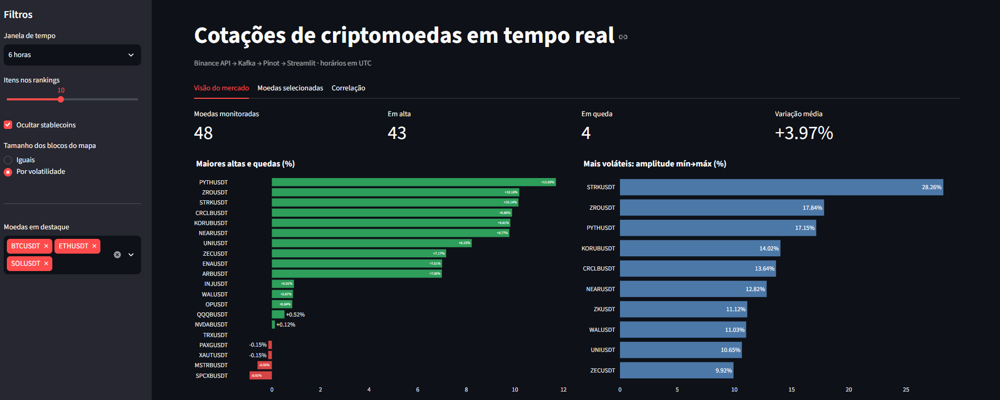

Engenharia de Dados
Dashboard de Cotações Cripto
Pipeline de dados em tempo real que coleta cotações da API da Binance, transmite eventos pelo Apache Kafka e disponibiliza os dados no Apache Pinot para consulta e visualização em um dashboard Streamlit.
Python
Docker
Apache Kafka
Apache Pinot
Streamlit